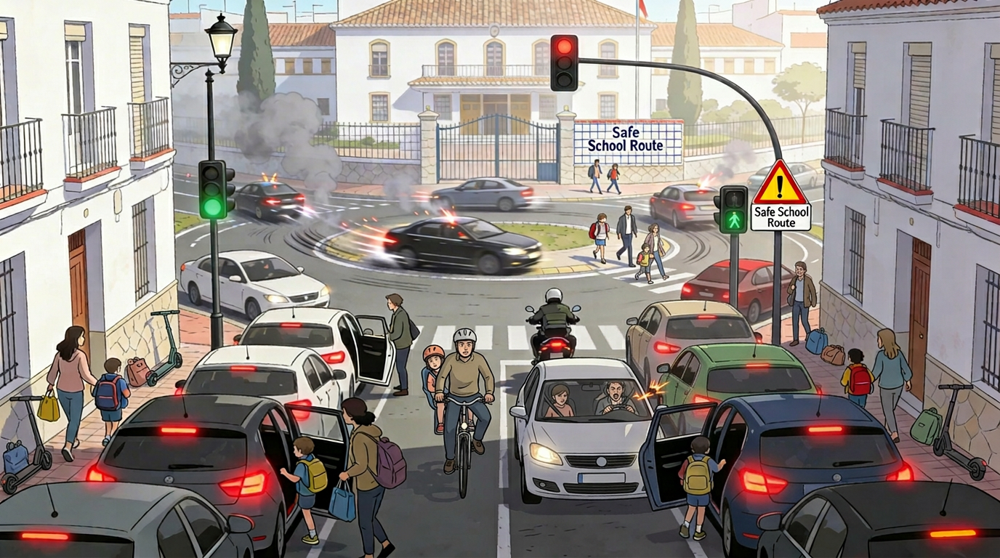

The Commuter’s Gauntlet
Mobility, Risk, and the Daily Negotiation of Survival
The roundabout, in its civic conception, is an instrument for the orderly resolution of competing trajectories. In Granada it has been quietly reclassified as a venue for the assertion of priority by means other than the Highway Code.
A reasonable place to begin is with the observation that the journey to work in this city is not, in any meaningful sense, a commute. It is a sequence of negotiations, each of which has a nominal rule and an operative one, and the daily task of the commuter is to learn the difference and to act on the second without admitting, even privately, that he is doing so. The nominal rules are posted on signs, painted on the asphalt and codified in a body of law to which the city pays a form of attention I shall come to in a moment. The operative rules are distributed by example, refreshed every morning, and enforced by the simple expedient of being followed by enough other drivers that any individual deviation feels, at the wheel, like a private form of sabotage.
I want to be precise about the temptation I am about to resist. The temptation is to attribute what follows to a regional disposition — the famously brusque granadino at the wheel, the raised hand, the unsignalled lane change executed with the particular conviction of a man who is, in his own estimation, already late. There is enough anecdotal material in any twenty-minute crossing of Camino de Ronda to fund such an account indefinitely. The account would, however, be wrong, or at any rate wrong in the way that matters. What I am describing is not a character. It is a learned norm, in Sennett’s sense (2018): a code that the city’s road users absorb by participation, refine by repetition and transmit by example to the next cohort of arrivals, including the ones who arrived recently enough to remember being shocked. The character is downstream of the norm. So am I.
The first stretch of any morning tour passes the perimeters of two schools and the access road to a third. Around each of these the operative rule, observable any weekday between half-past seven and a quarter past nine, is that the parental double-park is a courtesy extended by the urban environment to those whose transport of a child overrides any subsequent claim on the same lane. Triple-parking occurs, more rarely, and discloses itself by the third vehicle’s hazard lights, which are understood to convert any infraction into a temporary and therefore forgivable one. The single-lane sections of these streets collapse, with the predictability of a tide, into columns through which cyclists, scooters and other parents in slower vehicles must pick a route whose only available description is between. None of this is policed, in the sense that one could reasonably expect a presence; it is observed, periodically, by a municipal officer whose principal effect on the system is to displace the double-parking by approximately fifteen metres in the direction the officer is not facing.
Roundabouts, of which the city has many and on which a great deal of its peripheral traffic depends, operate under a parallel norm whose internal logic I have spent some time trying to articulate without rancour. The norm is that priority within the roundabout, which the law assigns to the vehicle already inside, is treated as a default subject to override by several locally significant variables: the colour and trim package of the entering vehicle, the apparent urgency of its driver’s facial expression, and the time of day. The aggravating factor is that the override is not consistent enough to be predictable. One learns to enter slowly, to avoid the inside lane on principle, and to assume that any vehicle visible in a feeder road may, with full sincerity, be planning to assert a priority it does not technically have. The school runs and the morning peak intensify the pattern; the late evening softens it without removing it; and at four in the morning, when the density of vehicles has dropped to the point where the question of priority is essentially hypothetical, one will still occasionally encounter a driver who treats the roundabout as a slalom course on which his being there at all is a sufficient claim to the racing line. I have, in moments of fatigue, found this funny. It is not. It is the second thing I want to correct.
What complicates the geometry of the roundabouts is that several of the busiest are positioned within a few metres of a traffic light, and several of those traffic lights are positioned within a few metres of a bus stop at which passengers continue to board and alight after the light has turned green. The practical effect, repeated dozens of times each morning across the city, is that three lanes feeding into the roundabout attempt to converge into two, the two attempt to converge into one around the stationary bus, and the resulting funnel delivers a small population of frustrated drivers into the roundabout at a rate the roundabout was never designed to absorb. The tram, when it crosses the system at certain junctions, periodically closes a feeder road altogether, and the back-up reaches several blocks. None of these elements is, in itself, an outrage. They are the consequence of decisions taken at different times, by different agencies, mostly within their own narrow remits and largely in good faith, and their combined effect is the kind of friction that no individual agency can be held to account for, because no single agency designed it. This is the texture of what Augé called the non-lieu (1992): not the absence of place, but the substitution of transit through for being in, until the distinction stops being available even to the people who used to live there.
The body of law I mentioned earlier deserves a word. In 2014 the Defensor del Pueblo Andaluz (the Andalusian Ombudsman, a regional office with powers of investigation and public censure but without binding executive authority), having compared sanction volumes across Andalusian capitals, opened a formal enquiry into why the city of Granada was issuing roughly 215,000 traffic fines per year, against around 137,000 in Málaga, which is larger and has more vehicles, and around 74,000 in Córdoba, which is comparable in both (Defensor del Pueblo Andaluz 2014). The institution found no plausible explanation in the relative behaviour of drivers and concluded, with considerable diplomatic care, that the discrepancy required either a revision of mobility policy or a revision of inspection practice — that is, in either reading, that the city was sanctioning more not because its drivers were worse but because its sanctioning apparatus had been calibrated differently. The twelve years since have produced no obvious change in the pattern. It is possible, then, to inhabit a city in which the operative norms of driving are observably worse than the written ones and in which the sanctioning machinery, far from correcting that gap, runs alongside it as a parallel and largely revenue-relevant system. The two coexist. This is not a paradox; it is what happens when enforcement is decoupled from the norms it was supposed to discipline.
The cost of the gap is not abstract. According to the Comisión Provincial de Tráfico, forty people died in thirty-five fatal collisions on the province’s interurban roads during 2025; this is a reduction of eleven per cent in fatalities relative to 2024, but hospitalised injuries rose by seven per cent over the same period (Redacción ahoraGranada 2026). Of those forty deaths, seventeen were vulnerable users — motorcyclists, moped riders, cyclists and pedestrians. The provisional figures for the province as a whole, presented at the November commemorative act, are starker: 575 accidents with victims, thirty-four fatalities, seventy-eight seriously injured and eight hundred and nineteen minor injuries (Rodríguez 2025). Translated into the terms of this chapter, the trend is that fewer commuters are killed and more are broken. The decline of fatalities owes something to vehicle safety, something to enforcement on the high-capacity rings, and very little to any recalibration of the operative norms inside the city itself. The air the survivors breathe, meanwhile, has exceeded the annual NO₂ limit of 40 μg/m³ at the Granada-Norte station for several consecutive years, and the ozone monitor at Armilla recorded forty-two days above the protective threshold in a single summer against a legal maximum of twenty-five (Ecologistas en Acción 2019). The pollutants and the driving norms have the same source.
I notice, on rereading the previous paragraph, that I have again allowed the data to do the moral work I was trying to keep the prose from doing. The correction is this: the figures do not, by themselves, indict anyone. They establish that the daily commute is, statistically, a low-grade and continuous production of injury, and that this production is distributed unevenly across categories of road user — with the vulnerable ones, as the Comisión put it in language drained of any discernible affect, requiring “preventive measures adjusted to their exposure to risk”. A motorcyclist filtering between double-parked vehicles outside a school is exposed in a sense the Highway Code does not capture. So is the parent who has double-parked, who has done so because the alternative — finding a legal space within walking distance — would cost them fifteen minutes they do not have, in a city whose public transport, on the routes that would replace their journey, saturates to the point of leaving them at the kerb at the very hour they need it most. The norms are not free-standing. They are the rational adaptation of a population to a system whose official version cannot be made to function for them.
This is where the chapter has to stop, because the alternative is to slide into a recommendation, and the volume is not in the business of recommendations. What the commuter learns, over the years, is a compound of small skills — anticipation, lane discipline of a peculiar local kind, the ability to read at speed which of two converging vehicles is bluffing — that he would prefer not to have had to acquire and that he cannot unlearn even when he travels to cities where they are not required. He brings them home with him, applies them to his own streets, and confirms, daily, that they continue to work. Their working is the problem.

Plate IV. Urban access junction, Granada periphery, present day, half-past eight in the morning. Two Safe School Route signs are visible; their placement has been noted. Several vehicles have interrupted their forward motion to discharge children directly into the lane; their relationship to the Highway Code has not been established. A cyclist occupies the central ground, technically in possession of the right of way and practically of very little else. The signs remain legible throughout.